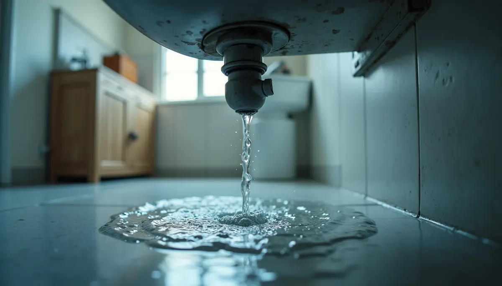

Plumbing does an important job in our homes, working quietly until something goes wrong. It’s easy to take it for granted, but once you notice problems like discolored water or frequent leaks, it’s time to pay attention. These signs could signal serious issues, especially in older homes. Understanding these markers can prevent bigger problems and costly repairs later on. This article will discuss clear warning signs that suggest it's time for a whole-home repipe and offer guidance on how to proceed.
Key Signs You're Nearing a Whole-Home Repipe
Discolored Water
One of the major indicators that your plumbing may need attention is discolored water. If your water has rust, brown, or green hues, it’s essential to act. This change in color is often due to corrosion within your pipes. A study found that nearly 45% of homes with older plumbing reported water discoloration linked to pipe deterioration. Such discoloration can pose health risks as old pipes may leak harmful metals into your water supply.
Ignoring discolored water can lead to further plumbing complications and costly repairs. If you notice this, consult your licensed plumber at Angle Stop Plumbing to evaluate your system.
Frequent Leaks
While the occasional leak is normal, if you consistently find multiple leaks throughout your home, it’s a serious concern. Pinhole leaks can develop in copper or galvanized pipes over time. The American Water Works Association reports that leaks can waste an average of 10,000 gallons of water per year for a typical household. This can lead to water damage, mold growth, and soaring water bills.
If you experience recurring leaks, call Angle Stop Plumbing to investigate; a repipe may be necessary to prevent more damage.
Low Water Pressure
Do your faucets seem more like dribblers than gushers? Low water pressure can be frustrating. Often, it’s caused by mineral buildup or corrosion in old pipes. Research indicates that as pipes age, they can lose up to 40% of their water flow capacity due to narrowing. This not only affects your showers and sink usage but can also cause your appliances to work harder, leading to higher energy bills.
If you find yourself continually grappling with low water pressure, it may be time to consider a whole-home repipe.
Noisy Pipes
If your home echoes with banging, rattling, or clanging pipes, you might be facing “water hammer.” These noises can indicate loose pipes or excessive water pressure. Although some minor fixes might help, persistent noise may highlight deeper plumbing issues. Identifying these problems early can save you from bigger troubles later on, especially if your pipes are aging.
Foul Odors
Foul smells coming from your taps or drains can also suggest a need for a repipe. Stale or musty odors often stem from bacteria thriving in stagnant water inside deteriorating pipes. In a survey, 30% of homeowners reported dealing with smells linked to their plumbing systems. Not only do these odors create an unpleasant environment, but they can also lead to health risks.
If any bad odors persist in your home, address them quickly to safeguard your health and comfort.
Age of Your Plumbing System
The age of your plumbing system is essential when considering a repipe. Most plumbing systems are designed to last around 50 years, depending on the materials used. For example, homes built before the 1970s might still have iron or lead pipes, which are more prone to corrosion. If your home features the original plumbing or shows multiple signs—like discolored water and frequent leaks—considering a repipe could be the smart choice.
Steps to Take When You Decide on a Whole-Home Repipe
Consultation with a Professional
Once you've identified a need for a repipe, start by consulting with Angle Stop Plumbing a licensed plumber. Angle Stop Plumbing will assess the condition of your plumbing and suggest the best options. They can help you understand the best materials based on your home’s specifications and your budget.
Choosing the Right Materials
When repiping, there are various materials to choose from, such as copper, PEX, and PVC. Each has its pros and cons:
- Copper: Known for its durability, copper is reliable but can be more expensive and may corrode over time.
- PEX (Cross-Link Polyethylene): PEX is flexible, resistant to scaling, and often more budget-friendly than copper.
- PVC (Polyvinyl Chloride): PVC is cost-effective but less durable at high temperatures compared to PEX.
Discussing these materials with your plumber will help you make a choice that fits your needs and budget.
Budgeting for the Repiping Process
Budgeting is critical when considering a whole-home repipe. On average, repiping a home can cost between $1,500 to $15,000, depending on the size of the house and the materials used. Choosing the cheapest option may save money upfront but could lead to larger issues down the road.
Preparing Your Home for the Repiping Process
Preparation for repiping is essential. Remove any obstacles around your plumbing areas, especially where walls might need to come down. Speaking with your professional plumber at Angle Stop Plumbing will help you understand how long the project will take and whether you will need temporary accommodations.
Maintenance After the Repiping
After completing a repipe, maintaining your new system is crucial. Schedule regular inspections to catch any potential issues early. Keeping an eye on the warning signs mentioned earlier is also wise. Proactive maintenance will extend the lifespan of your new plumbing.
Take Action for Your Plumbing Health
If you’ve observed any of the signs discussed, it’s vital to consider a whole-home repipe. Ignoring these issues can lead to significant damage and expensive repairs that could have been easily avoided.
Discolored water, frequent leaks, low water pressure, noisy pipes, and foul odors are all indicators that your plumbing system may be nearing the end of its life. With careful planning, consultation by Angle Stop Plumbing, and informed decision-making, you can ensure your home remains safe and efficient. Don’t hesitate to contact Angle Stop Plumbing (615) 398-3048 about any concerns; maintaining your plumbing health is a wise investment.

Being proactive will protect your home from future plumbing disasters, allowing you to enjoy the comforts of home without worrying about nagging leaks or issues.